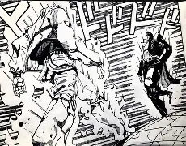

Jojo's Bizarre Adventure mangá

JoJo's Bizarre Adventure é uma saga geracional que acompanha a linhagem da família Joestar em batalhas sobrenaturais que atravessam séculos. A história começa no século XIX com a rivalidade entre Jonathan Joestar e o vilão Dio Brando, que se torna um vampiro imortal. A partir daí, a cada "Parte", um novo descendente (apelidado de JoJo) assume o protagonismo em diferentes épocas e locais — desde o Egito dos anos 80 até a máfia italiana dos anos 2000. A série evolui do uso de artes marciais solares (Hamon) para a introdução dos Stands, manifestações psíquicas de poder únicas para cada usuário. Após um confronto final apocalíptico na Flórida que altera a realidade, a saga se reinventa em um novo universo com corridas de cavalos épicas e mistérios de identidade. Conhecida por seu estilo visual extravagante e referências constantes à música e moda, JoJo é uma narrativa sobre o destino, a força de vontade e os laços de sangue inquebráveis.
| Gênero | Ação, Aventura, Sobrenatural, Fantasia, Shounen |
|---|---|
| Autor | Hirohiko Araki |
| Editora | Shonen Jump |
| Data de Lançamento | 1 de janeiro de 1987 |